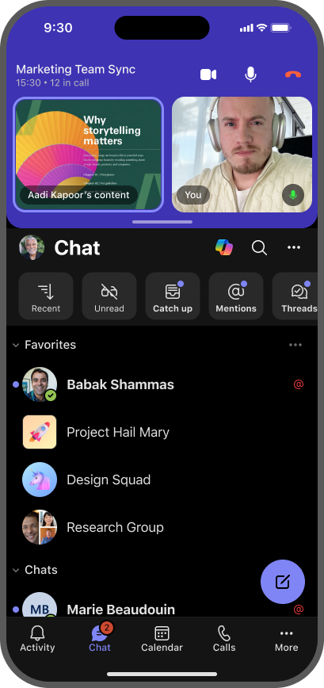
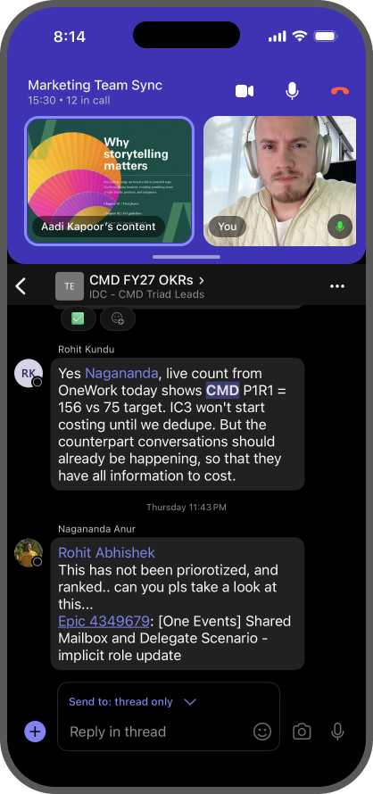
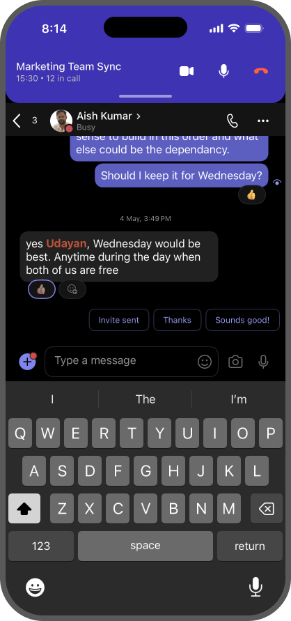
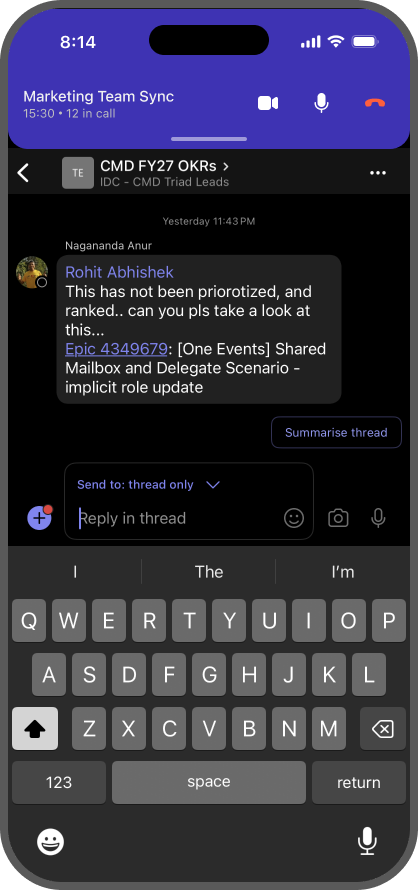
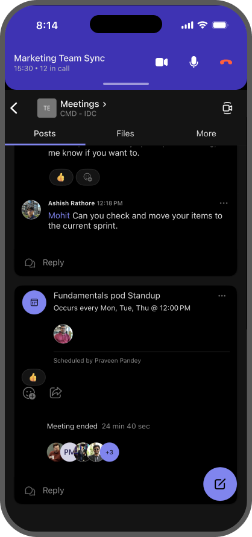
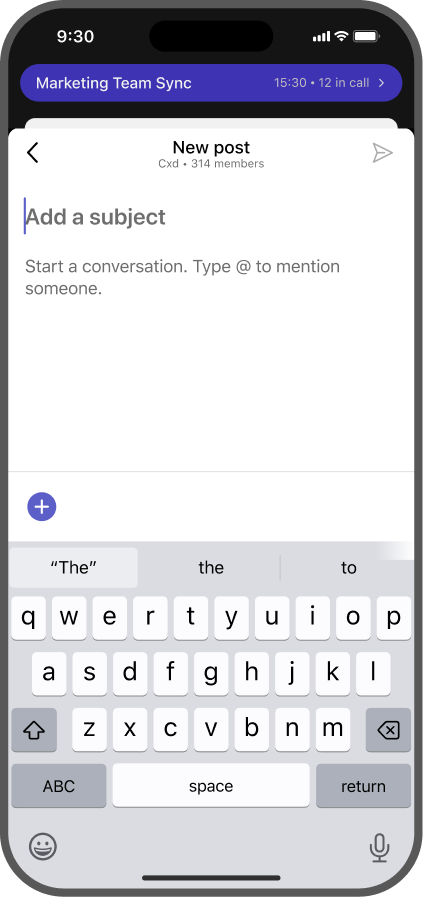
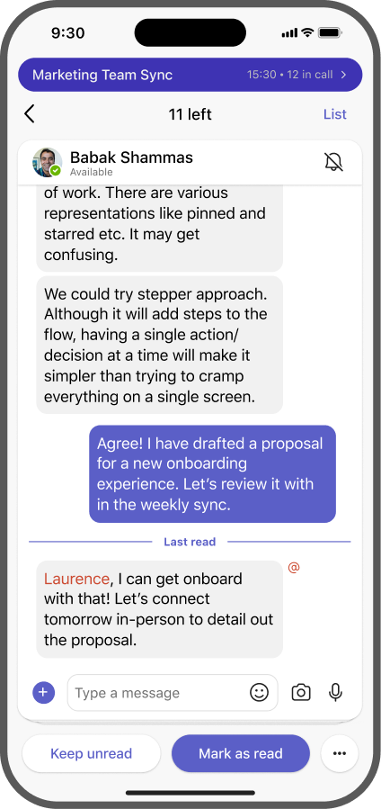
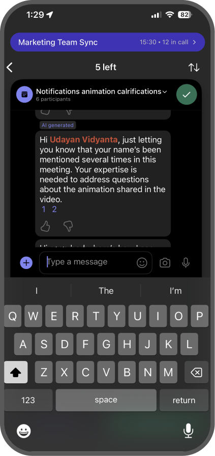
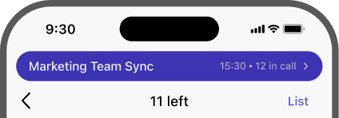
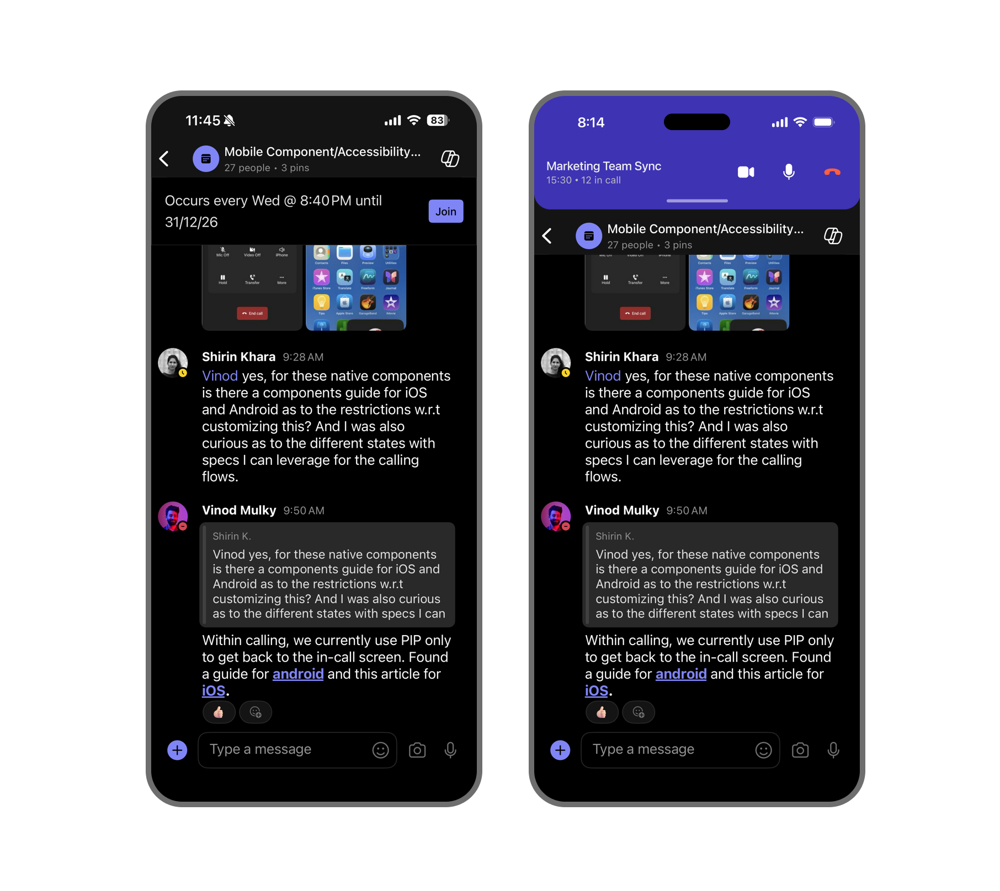

Principles and a decision tree for the Meeting dock. The principles explain how the dock behaves and why; the decision tree picks the right variant when you add a new surface to the IA. Each principle is a single rule, an example, and a literal check you can run on a mockup.
Before applying the principles below, confirm the surface you're designing for is within the dock's scope.
Today the dock takes three forms across the IA. They share a position (top of the surface) and differ in how much of that region they claim.
Header only, handle retained. Controls stay visible; tiles drop away. Handle invites drag-to-expand.
Slim pill, no handle. Timer + return chevron. The pill itself is the tap target; no drag affordance.
All three states live at the top of the surface, just under the status bar. What changes between them is how much vertical real estate the meeting claims, not where it sits.
Every surface in the current IA, and the dock variant that appears on it. "A → B" means the variant starts as A and changes to B under a specific trigger.
| Surface | Variant | Why |
|---|---|---|
| L0 — Activity, Chat list, Calendar, Calls, More | Expanded → Collapsed | Default Expanded. Collapses when the user scrolls down on any of these tabs. |
| L1 — 1:1 chat, group chat, threaded channel | Expanded → Collapsed | Default Expanded. Collapses when the keyboard opens, or when the user scrolls down through messages. |
| L2 — Thread reply inside threaded channel | Expanded → Collapsed | Behaves like L1 Chat — same keyboard and scroll triggers. |
| L1 — Unthreaded channel (post feed) | Expanded → Collapsed | Default Expanded. Collapses on scroll through the post feed. |
| L2 — Unthreaded channel "New post" | Minimized | The compose drawer IS the surface (Q1 of the rubric). Dock retreats to a pill. |
| L1 — Catchup (swipe cards) | Minimized | Immersive single-task triage (Q2 of the rubric). Attention is the constraint. |
| L2 — Catchup → reply / new post | Minimized | Continues Catchup's immersion, and the destination itself is a drawer. |
Each dock state, shown on the surfaces where it currently appears.
Header + tiles. Used when the surface can spare the room.


Header only. Used when the surface needs vertical room for typing or scrolling.



Slim pill. Used for immersive flows or surfaces whose layout takes the dock's normal habitat.



Three rules about what the dock is. Use these when the operational principles don't clearly settle a question, or to explain a design choice in a review.
Rule. The dock is the meeting itself, shown at a smaller size. It is not a notification, a reminder, or a return-to-meeting button. In every state, the user is still on camera, still audible to other participants, and still being timed.
Example. The Minimized pill at the top of Catchup reads "15:30 · 12 in call" with a live timer. The user is participating in the meeting while triaging chats — not "running it in the background."

Rule. When the dock is present, the surface naturally has less vertical room to render in — the dock sits at the top of the screen. That's expected. What the surface should not do is change its own layout, drop content, hide functionality, or reflow its primary UI in response to the dock. The dock is the one that changes shape — Expanded → Collapsed → Minimized — to claim less or more of the top region. The surface just renders within whatever's left.
Example. When the user opens Catchup, the dock shrinks to a Minimized pill (claiming a small strip at the top). The Catchup card stack renders in the remaining space with its full layout — same card size, same swipe affordances, same controls. It didn't shrink any element or hide any feature to "fit the dock"; the dock is the one that yielded.
Rule. The dock sits at the top of the screen in all three states. What varies between Expanded, Collapsed, and Minimized is how much of the top region the dock claims — never where on the screen it sits.
Five rules about how the dock behaves. These tie directly to surface design and code. If two rules seem to conflict, fall back to the vision principles to settle it.
Rule. Expanded, Collapsed, Minimized. Every surface in the IA today fits one of these three. New surfaces should too.
Rule — two triggers, two responses:
Example.
Rule. Turning video on (meeting.isVideoOn = true) expands the dock and dismisses the keyboard. Opening the keyboard collapses the expanded dock. The user is either typing or on camera — never both at the same time.
Example. User is composing a message in L1 Chat (keyboard up, dock Collapsed). They turn video on. The keyboard dismisses, the dock expands, the half-typed message is preserved in the input. They can return to typing by tapping the input — and the dock collapses again.
Rule. When the user scrolls down on a surface where the dock is Expanded, the dock auto-collapses. Scrolling back to the top restores Expanded. This applies uniformly to every L0 tab that scrolls (Activity, Chat list, Calendar, Calls, More) and every L1 chat / feed / grid. Surfaces that don't scroll never trigger this behavior — there's nothing to trigger on.
Example. User is in a meeting and opens L0 Activity. Dock is Expanded. They scroll down to read older notifications — dock Collapses. They scroll back to the top — dock Expands again.
Rule. Tapping the dock from any state returns the user to the meeting stage in exactly the state they left it: same mic, same video, same content-sharing view. The round-trip is one tap. No confirm dialog, no intermediate sheet, no re-join flow.
Example. User leaves the meeting stage while sharing a slide. They navigate to Chat, then Catchup. They tap the Minimized dock to return — the slide is still shared, their mic and camera are exactly as they were. (Implementation: state is preserved in ActiveMeetingContext.)
Rule. When the dock is present on a surface, banner-style nudges on the same surface — recurring-meeting reminders, missed-call prompts, schedule banners, sticky promotional bars — are subdued or hidden. The dock has higher claim on the surface's vertical space than these transient banners, and the page's working area below the dock must remain usable.

Answer the questions in order, top to bottom. The first "yes" wins; stop and use that verdict. The result updates live below.
"The drawer IS the page you've landed on." Not "a drawer happens to appear on top." A keyboard popping up does NOT count — that's a transient overlay, handled by Q3.
Concretely: the surface presents a single item, decision, or card, and asks the user to read / decide / swipe before moving on.
Either trigger qualifies. Any surface that scrolls down is a candidate — long lists, grids, feeds, or short lists that can scroll a bit. If the surface fits on one screen and never scrolls, the answer is No.
Anything that doesn't fit Q1–Q3 — a single-screen surface with no scroll, no keyboard, no immersion, no drawer. Dock stays Expanded; user can drag it down to Collapse manually.